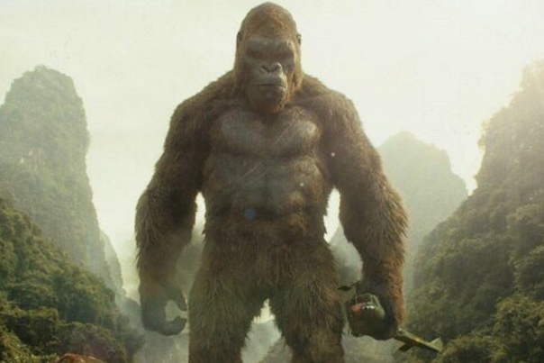

King Kong é um personagem de cinema, um gorila gigante, que teve origem no clássico filme King Kong (1933). O nome do primata é Kong, sendo o prenome King (Rei, em português), dado pelos promotores da desastrosa exibição pública em Nova York, contada no filme.

(#TeamKong)
Navegamento das paginas:
Home
Godzilla